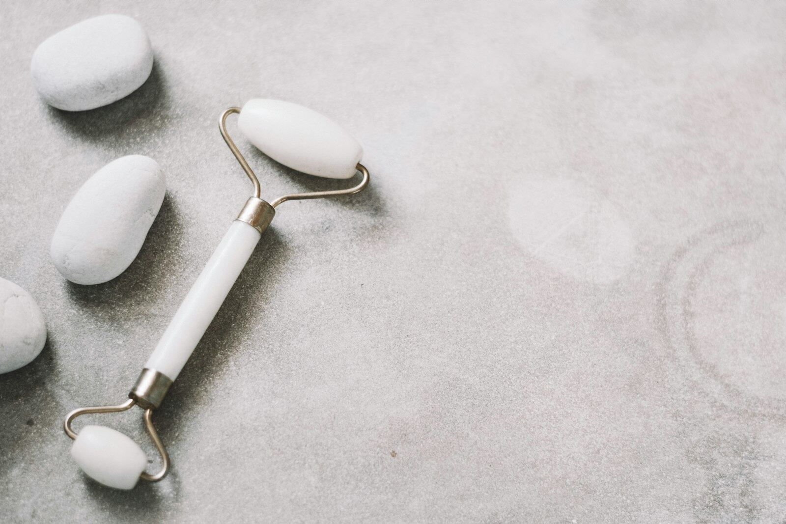

Best Facial Massage & Gua Sha Tools

Facial massage tools range from a five-minute morning habit to a genuine skincare device, and the right pick depends on whether you want a ritual or a result. These four cover that whole range: a classic gua sha and roller set, a cooling ice roller, an electric heated gua sha device, and a wireless red light therapy mask for the most involved routine.
| Product | Tier | Best for |
|---|---|---|
| LATME Ice Roller | Quick-ritual pick | a fast, cooling de-puffing step first thing in the morning |
| Yeamon Gua Sha & Face Roller Set | Classic pick | a traditional gua sha and roller combo for daily facial massage |
| ZDEER GS5 Electric Heated Gua Sha Kit | Upgraded pick | combining heat, vibration, and red light with the gua sha motion |
| INIA GLOW 4D Red Light Therapy Mask | Full-routine pick | a dedicated, hands-free red light therapy session |
1. LATME Ice Roller
Quick-ritual pick
Similar style shown — see the exact model and finish on Amazon.
- Design: a gel-filled roller stored in the freezer for a cooling massage on the face and under-eyes
- One of the best-reviewed facial tools on Amazon, with over 16,000 ratings
- Best for: quick morning de-puffing in under a minute, no setup required
2. Yeamon Gua Sha & Face Roller Set
Classic pick
Similar style shown — see the exact model and finish on Amazon.
- Design: a cooling stainless steel gua sha tool paired with a face and eye roller
- Amazon's Choice with over 1,000 ratings and consistent monthly sales
- Best for: a traditional gua sha technique combined with rolling in one set
3. ZDEER GS5 Electric Heated Gua Sha Kit
Upgraded pick
Similar style shown — see the exact model and finish on Amazon.
- Design: a brass gua sha-shaped device with heat, vibration, and red light built in
- Includes two bottles of massage oil to use alongside the device
- Best for: layering heat and light therapy onto a traditional gua sha motion
4. INIA GLOW 4D Red Light Therapy Mask
Full-routine pick
Similar style shown — see the exact model and finish on Amazon.
- Design: a wireless, 4D contour-fit mask with 320 LEDs across dual near-infrared wavelengths
- Cordless and rechargeable, with under-eye cooling and multiple light modes
- Best for: a dedicated, hands-free red light therapy session rather than a quick manual massage
Which one should you get?
The gap between these four is really about how hands-on you want to be: the ice roller and the gua sha set are quick, technique-based rituals you do yourself, the electric gua sha adds features to that same motion, and the red light mask is a hands-free device you wear instead of a tool you move across your skin. None of these replace a dermatologist for a specific skin concern — they're a maintenance routine, not a treatment.
Frequently asked questions
How often should you use a gua sha tool?
Most people see the ritual-level benefit (temporary de-puffing, relaxation) from using it a few times a week; daily use is fine too as long as you're using light pressure and proper technique rather than scraping hard.
Does red light therapy actually work for skin?
There's a reasonable body of research supporting red and near-infrared light for skin tone and texture over consistent use, though results vary by person and are gradual rather than immediate — think months, not days.
Can you use an ice roller every day?
Yes, it's one of the gentler tools in this category and is generally fine for daily use — just avoid rolling directly over broken skin, active breakouts, or very sensitive areas without easing in first.